Testing Different Management Strategies in the Management Procedure of FLBEIA
26 febrero, 2020
## Warning: package 'knitr' was built under R version
## 3.5.3
Aim
FLBEIA (Garcia et al. 2017) provides a battery of tutorials for learning how to use this software. This is the fourth tutorial of FLBEIA and it is a practical guide about how to implement different management measures within FLBEIA.
In this tutorial some examples on how to simulate changes in management measures are presented. Firstly, it is explained how to change the Harvest Control Rule (HCR). Secondly, how to simulate effort-based management is presented. Thirdly, an example on how to include of technical measures is included. And finally, it is described how to simulate spatial and/or temporal closures. Additionally, some exercises are proposed.
The exact way to define the objects used to set the simulation is described in the FLBEIA manual. This manual can be download from GitHub, within the ‘doc’ folder of the package installation or typing help(package = FLBEIA) in the R console. Nevertheless, the objects to set the simulation doesn’t need to be defined for the following examples, as the datasets oneIt and multi from the FLBEIA package will be used. For details on these objects, see FLBEIA tutorial, Section 5.2 or type ?FLBEIA in the R console.
To see all the datasets available in the FLBEIA package:
data(package='FLBEIA')Required packages to run this tutorial
To follow this tutorial you should have installed the following packages:
If you are using Windows, please use 32-bit R version because some of the packages do not work in 64-bit.
install.packages( c("ggplot2"))
install.packages( c("FLCore", "FLBEIA", "FLFleets", "FLash", "FLAssess", "FLXSA", "ggplotFL"),
repos="http://flr-project.org/R")Load all necessary packages.
# Load all necessary packages.
library(FLBEIA)
library(FLXSA)
library(FLash)
library(ggplotFL)EXAMPLE 1: changing the Harvest Control Rule
Description
This example shows how to change the HCR used in the Management Procedure (MP). In this case, the Operating Model (OM) runs annually and it is formed by a single age-structured stock and an unique fleet which activity is performed in an unique m?tier. In the Management Procedure (MP), the fleet dynamics is assumed to be a Simple Mixed Fisheries behaviour (for details, see information on SMFB function in the FLBEIA manual, the stock is observed without error, there is not assessment carried out and the ICES HCR (ICES 2009) is used to se the TAC yearly.
All the objects have 3 iterations and uncertainty in the projections comes exclusively from the generation of the new incoming recruitments.
- Operating model:
- Biological:
- Population dynamics:
stk1- age structured population growth - SR model:
stk1- Beverthon and Holt autoregressive/segmented regression
- Population dynamics:
- Fleet:
fl1- Simple Mixed Fisheries Behaviour - Covariates: no covariates
- Biological:
- Management Procedure:
- Observation:
stk1- perfect observation - Assessment:
stk1- no assessment - Management advice:
stk1- ICES harvest control rule
- Observation:
The neccesary FLR objects to run FLBEIA are available in the dataset called oneIt.
# Load the dataset
rm(list=ls()) # empty the workspace
data(oneIt) # load the datasetExploring the data
Information related to management advice component of the MP is provided in oneItAdv and oneItAdvC objects.
# Objects with info related to management advice
oneItAdv # info on TAC/TAE and quota share
oneItAdvC # control object related to adviceCurrently ICES HCR is being used, so we will change it to AnnexIV HCR (De Oliveira et al. 2010, see Annex IV rules 4 and 5 a/b (HCR 2 and 4)).
For this rule, it is required an index in biomass, which is available in the dataset we are using (oneIt).
# required an index in biomass:
ls()character(0)summary(oneItIndBio[[1]]) # Biomass indexAn object of class "FLIndices"
Elements: idBio
Name: idBio
Description:
Range: min max pgroup minyear maxyear startf endf
0 0 NA 1990 2009 0.12 0.88
Quant: age
dim: 1 36 1 1 1 summary(oneItIndBio[['stk1']]$idBio) # or: oneItIndBio$stk1$idBioAn object of class "FLIndexBiomass"
Name: idBio
Description:
Distribution :
Quant: age
Dims: age year unit season area iter
1 36 1 1 1 3
Range: min max pgroup minyear maxyear startf endf
0 0 NA 1990 2009 0.12 0.88
index : [ 1 36 1 1 1 3 ], units = NA
index.var : [ 1 36 1 1 1 3 ], units = NA
catch.n : [ 1 36 1 1 1 3 ], units = NA
catch.wt : [ 1 36 1 1 1 3 ], units = NA
effort : [ 1 36 1 1 1 3 ], units = NA
sel.pattern : [ 1 36 1 1 1 3 ], units = NA
index.q : [ 1 36 1 1 1 3 ], units = NA summary(oneItObsCIndBio) # Control object related to the biomass index| Length | Class | Mode | |
|---|---|---|---|
| stk1 | 2 | -none- | list |
summary(oneItObsCIndBio$stk1)| Length | Class | Mode | |
|---|---|---|---|
| stkObs | 4 | -none- | list |
| indObs | 1 | -none- | list |
oneItObsCIndBio$stk1$indObs$idBio
$idBio$indObs.model
[1] "bioInd"Now we need to set the control parameters for this new HCR, for more details on the control parameters required for the different HCRs available, see the FLBEIA manual. In this particular case, we have to indicate the name of the index to be used, the reference points (i.e. alpha and beta) and the type of rule (options: 2 or 4, see HCRs from De Oliveira et al. 2010).
# set the control parameters for the new HCR
oneItAdvC2 <- oneItAdvC
stk1.advC <- list()
stk1.advC$HCR.model <- 'annexIVHCR' # selected HCR
stk1.advC$index <- 'id2' # biomass index
nit <- dim(oneItFl[[1]]@effort)[6]
stk1.advC$ref.pts <- array( c(0.1,0.2), # reference points (alpha=0.1, beta=0.2)
dim=c(2,nit),
dimnames = list(c('alpha','beta'),dimnames(oneItFl[[1]]@effort)$iter))
stk1.advC$type <- 2
oneItAdvC2$stk1 <- stk1.advC
# There is not assessment and the stock does not need to be obseved
oneItObsCIndBio$stk1$stkObs$stkObs.model <- 'NoObsStock'
# Set in the advice control the name of the index to be used
oneItAdvC2[['stk1']][["index"]] <- name(oneItIndBio$stk1$idBio)Run FLBEIA
Base Case (bc): using ICES HCR
s1 <- FLBEIA( biols = oneItBio, # FLBiols: FLBiol for stk1.
SRs = oneItSR, # List: FLSRSim for stk1.
BDs = NULL, # Not population with biomass dynamics.
fleets = oneItFl, # FLFleets: one fleet.
covars = oneItCv, # List: covars related to economy.
indices = NULL, # Indices not used.
advice = oneItAdv, # List: 'TAC' and 'quota.share'
main.ctrl = oneItMainC, # List: info on start and end of the simulation.
biols.ctrl = oneItBioC, # List: model to simulate the stock dynamics.
fleets.ctrl = oneItFlC, # List: fleet dyn. models and other parameters.
covars.ctrl = oneItCvC, # List: covariates dynamics ("fixedCovar").
obs.ctrl = oneItObsC, # List: type of stock and index observation
# ("PerfectObs","NoObsIndex").
assess.ctrl = oneItAssC, # List: assessment model used ("NoAssessment").
advice.ctrl = oneItAdvC) # List: rule for TAC advice ("IcesHCR").Altenative case (a4): using AnnexIV HCR
s1a <- FLBEIA( biols = oneItBio, # FLBiols: FLBiol for stk1.
SRs = oneItSR, # List: FLSRSim for stk1.
BDs = NULL, # Not population with biomass dynamics.
fleets = oneItFl, # FLFleets: one fleet.
covars = oneItCv, # List: covars related to economy.
indices = oneItIndBio, # Biomass index.
advice = oneItAdv, # List: 'TAC' and 'quota.share'
main.ctrl = oneItMainC, # List: info on start and end of the simulation.
biols.ctrl = oneItBioC, # List: model to simulate the stock dynamics.
fleets.ctrl = oneItFlC, # List: fleet dyn. models and other parameters.
covars.ctrl = oneItCvC, # List: covariates dynamics ("fixedCovar").
obs.ctrl = oneItObsCIndBio, # List: type of stock and index observation
# ("NoObsStock","bioInd").
assess.ctrl = oneItAssC, # List: assessment model used ("NoAssessment").
advice.ctrl = oneItAdvC2) # List: rule for TAC advice ("AnnexIV").See that the differences in the call are the advice.ctrl, indices and obs.ctrl objects, where we say to FLBEIA what HCR shoul be applied and wich indices are available and how to generate them (among other things).
Results
Setting the reference points:
Blim.stk1 <- 800
Bpa.stk1 <- 1200Summary plots comparing both scenarios:
# - stock summary
s10_bio <- rbind( bioSum(s1),
bioSum(s1a, scenario='a4')) # biological indicators
plotbioSum( s10_bio, Blim=Blim.stk1, Bpa=Bpa.stk1, proj.yr=oneItMainC$sim.years[['initial']])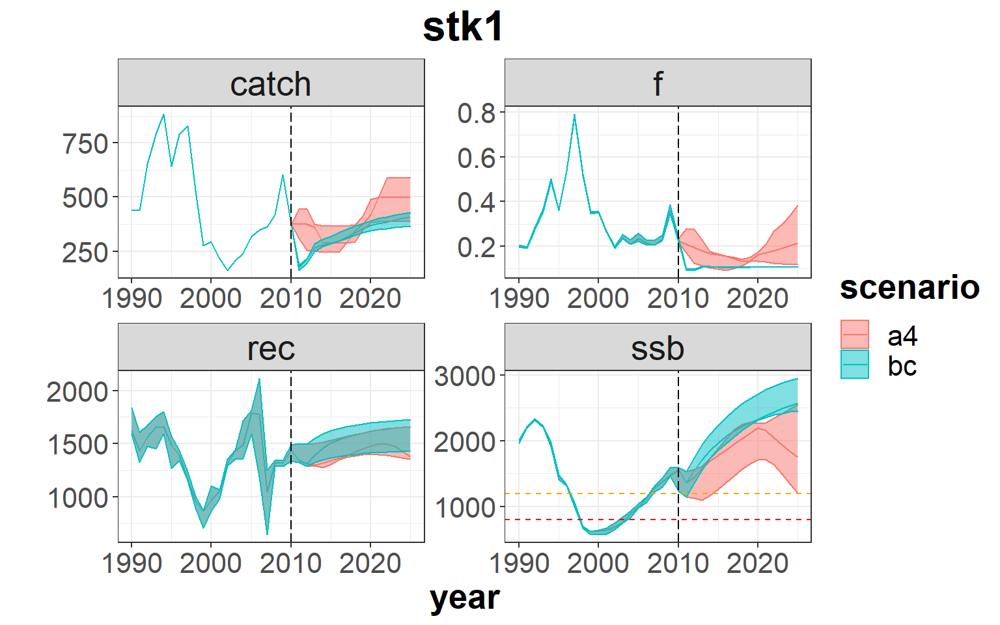
# - economic summary
s10_flt <- rbind( fltSum(s1),
fltSum(s1a, scenario='a4')) # indicators at fleet level
plotfltSum( s10_flt, proj.yr=oneItMainC$sim.years[['initial']])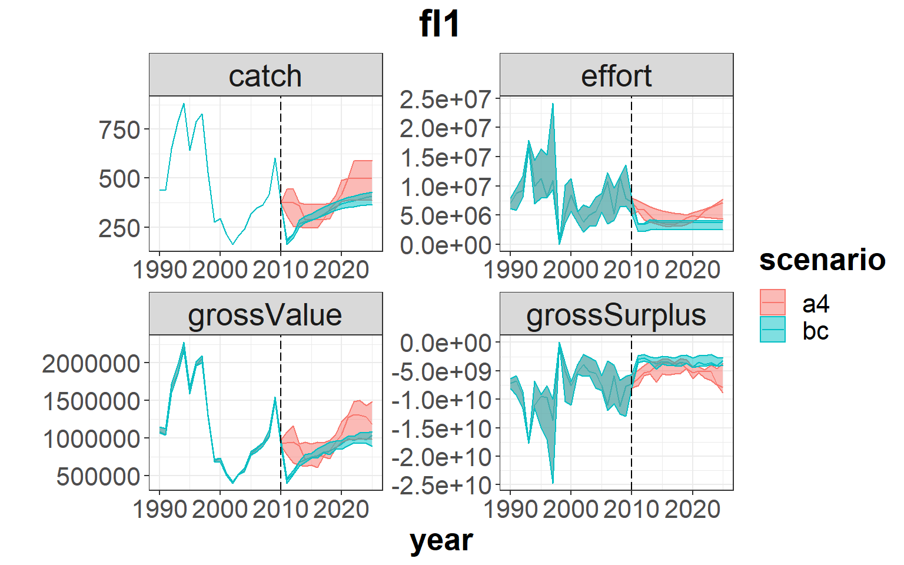
# - risk summary
s1_risk <- riskSum( s1, Bpa = c(stk1=Bpa.stk1), Blim = c(stk1=Blim.stk1), Prflim = c(fl1 = 0))
s1a_risk <- riskSum( s1a, Bpa = c(stk1=Bpa.stk1), Blim = c(stk1=Blim.stk1), Prflim = c(fl1 = 0),
scenario='a4')
s10_risk <- rbind( s1_risk, s1a_risk) # risk indicators
s10_risk$year <- as.numeric(s10_risk$year)
p <- ggplot( data=s10_risk, aes(x=year, y=value, color=scenario)) +
geom_line() +
facet_wrap(~indicator, scales="free") +
facet_grid(indicator ~ .) +
geom_vline(xintercept = oneItMainC$sim.years[['initial']]-1, linetype = "longdash")+
theme_bw()+
theme(text=element_text(size=15),
title=element_text(size=15,face="bold"),
strip.text=element_text(size=15))+
ylab("Risk")
print(p)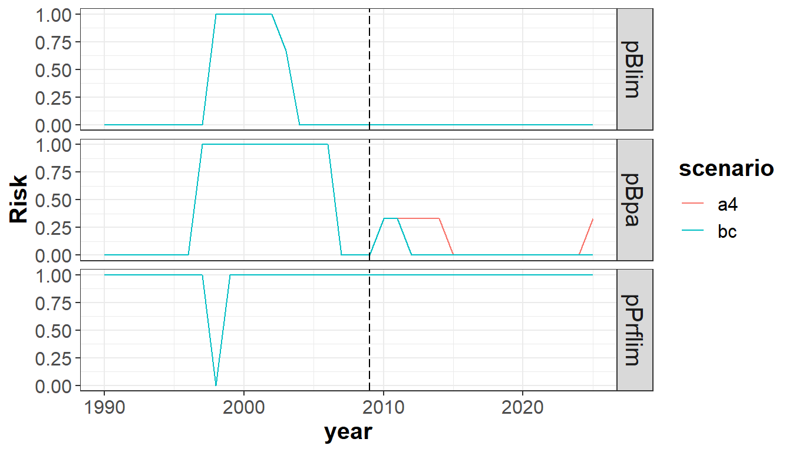
Note that due to the uncertainty introduced in the recruitment and the very low number of iterations, you can get very different results from the ones shown in this example. Therefore when running an MSE the number of iterations should be enough to get stability in the results (i.e. the quantiles).
EXAMPLE 2: effort-based management
Description
This example shows how to carry out MSE simulations based on effort. Currently, in FLBEIA there is not available any specific function to simulate an effort-based management. For carrying out an adaptative effort-based management an effort-based HCR needs to be defined. However, there is the possibility to do it by setting a priory the allowed effort for the projection period (independently from the stock status), instead of calculating it as a function of the expected quota based on a given a HCR and the stock status.
In this case, we use the same data as in the previous example (i.e. oneIt). For details on it, see Example 1.
data(oneIt) # load the datasetExploring the data
Initial assumption on effort, when conditioning the objects using the easy/smart conditioning functions (FLBEIA manual, Chapter 5), is that the effort in the projection period is the mean effort of a range of years (determined by the user). Afterwards, when running the simulation, depending on the function selected to simulate the fleet dynamics this effort is recalculated, except for the case when selecting fixedEffort (as it is the case here) where these initially set effort values are maintained constant.
Initially, the effort dynamics model selected in the data from oneIt is SMFB (Simple Mixed Fisheries Behaviour), so we need to change it to fixed effort and define the effort values for the projection period as desired.
# Fleet dynamics: effort model
oneItFlC$fl1$effort.model[1] "SMFB"# reset it to fixed effort
oneItFlC$fl1$effort.model <- 'fixedEffort'For this dataset, the effort in the projection period is calculated as the mean of the last 2 years (i.e. 2008-2009), we will consider this as the base case and an alternative scenarios will be defined for the effort in the projection period:
- bc : mean of the last 2 years;
- E20 : 20% reduction of the effort relative to last 3 years mean;
Effort values are defined in oneItFl, so we generate a new object with these new values for each alternative scenario.
# Define the FLFleetsExt object for the alternative scenarios
oneItFl2a <- oneItFl
# Store values of simulation and historic years
yrs <- dimnames(oneItFl[[1]]@effort)$year
sim.yrs <- as.character(oneItMainC$sim.years['initial']:oneItMainC$sim.years['final'])
hist.yrs <- yrs[!yrs %in% sim.yrs]
# Change the effort for the simulation years for the alternative scenario:
oneItFl2a[[1]]@effort[,sim.yrs,] <-
0.80 * yearMeans(oneItFl2a[[1]]@effort[,hist.yrs[length(hist.yrs)+(-2:0)],])Run FLBEIA
Base Case: effort in projection period equal to the mean of last 2 years
s2 <- FLBEIA( biols = oneItBio, # FLBiols: FLBiol for stk1.
SRs = oneItSR, # List: FLSRSim for stk1.
BDs = NULL, # Not population with biomass dynamics.
fleets = oneItFl, # FLFleets: one fleet.
covars = oneItCv, # List: covars related to economy.
indices = NULL, # Not indices.
advice = oneItAdv, # List: 'TAC' and 'quota.share'
main.ctrl = oneItMainC, # List: info on start and end of the simulation.
biols.ctrl = oneItBioC, # List: model to simulate the stock dynamics.
fleets.ctrl = oneItFlC, # List: fleet dyn. models and other parameters.
covars.ctrl = oneItCvC, # List: covariates dynamics ("fixedCovar").
obs.ctrl = oneItObsC, # List: type of stock and index observation
# ("PerfectObs","NoObsIndex").
assess.ctrl = oneItAssC, # List: assessment model used ("NoAssessment").
advice.ctrl = oneItAdvC) # List: rule for TAC advice ("IcesHCR").Altenative case:
- Direct reduction of effort (E20): 20% reduction of the effort relative to the last 3 years mean
s2a <- FLBEIA( biols = oneItBio, # FLBiols: FLBiol for stk1.
SRs = oneItSR, # List: FLSRSim for stk1.
BDs = NULL, # Not population with biomass dynamics.
fleets = oneItFl2a, # FLFleets: one fleet.
covars = oneItCv, # List: covars related to economy.
indices = NULL, # Not indices.
advice = oneItAdv, # List: 'TAC' and 'quota.share'
main.ctrl = oneItMainC, # List: info on start and end of the simulation.
biols.ctrl = oneItBioC, # List: model to simulate the stock dynamics.
fleets.ctrl = oneItFlC, # List: fleet dyn. models and other parameters.
covars.ctrl = oneItCvC, # List: covariates dynamics ("fixedCovar").
obs.ctrl = oneItObsC, # List: type of stock and index observation
# ("PerfectObs","NoObsIndex").
assess.ctrl = oneItAssC, # List: assessment model used ("NoAssessment").
advice.ctrl = oneItAdvC) # List: rule for TAC advice ("IcesHCR").See that the only difference in the call is the fleets object, where we say to FLBEIA which effort to apply (among other things).
Results
Setting the reference points:
Blim.stk1 <- 800
Bpa.stk1 <- 1200Summary plots comparing the different scenarios:
# - stock summary
s20_bio <- rbind( bioSum(s2),
bioSum(s2a, scenario='E20')) # biological indicators
plotbioSum( s20_bio, Blim=Blim.stk1, Bpa=Bpa.stk1, proj.yr=oneItMainC$sim.years[['initial']])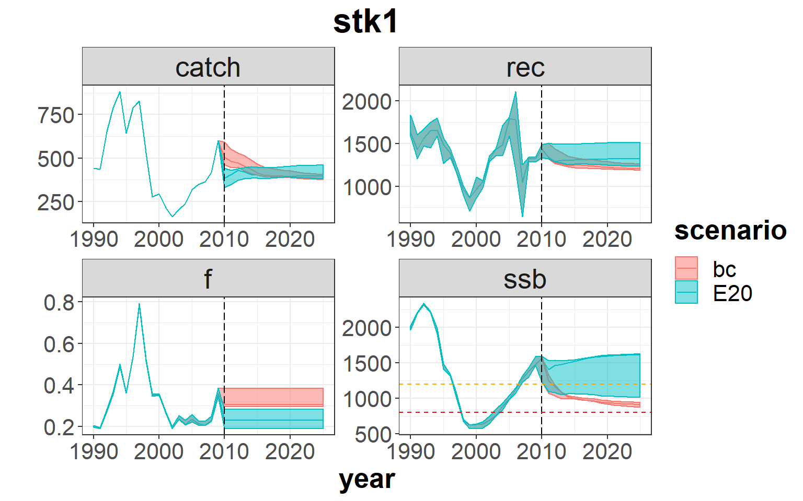
# - economic summary
s20_flt <- rbind( fltSum(s2),
fltSum(s2a, scenario='E20')) # indicators at fleet level
plotfltSum( s20_flt, proj.yr=oneItMainC$sim.years[['initial']])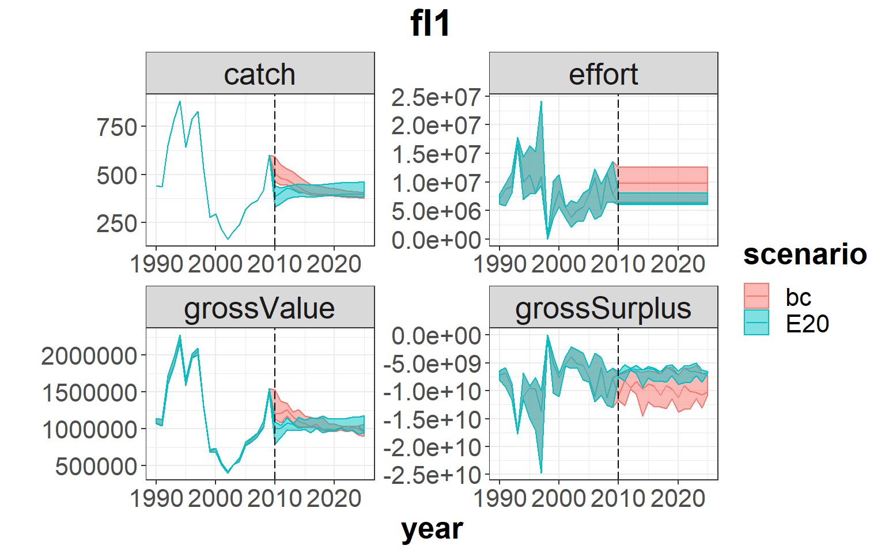
# - risk summary
s2_risk <- riskSum( s2, Bpa = c(stk1=Bpa.stk1), Blim = c(stk1=Blim.stk1), Prflim = c(fl1 = 0))
s2a_risk <- riskSum( s2a, Bpa = c(stk1=Bpa.stk1), Blim = c(stk1=Blim.stk1), Prflim = c(fl1 = 0),
scenario='E20')
s20_risk <- rbind( s2_risk, s2a_risk) # risk indicators
s20_risk$year <- as.numeric(s20_risk$year)
p <- ggplot( data=s20_risk, aes(x=year, y=value, color=scenario)) +
geom_line() +
facet_wrap(~indicator, scales="free") +
facet_grid(indicator ~ .) +
geom_vline(xintercept = oneItMainC$sim.years[['initial']]-1, linetype = "longdash")+
theme_bw()+
theme(text=element_text(size=15),
title=element_text(size=15,face="bold"),
strip.text=element_text(size=15))+
ylab("Risk")
print(p)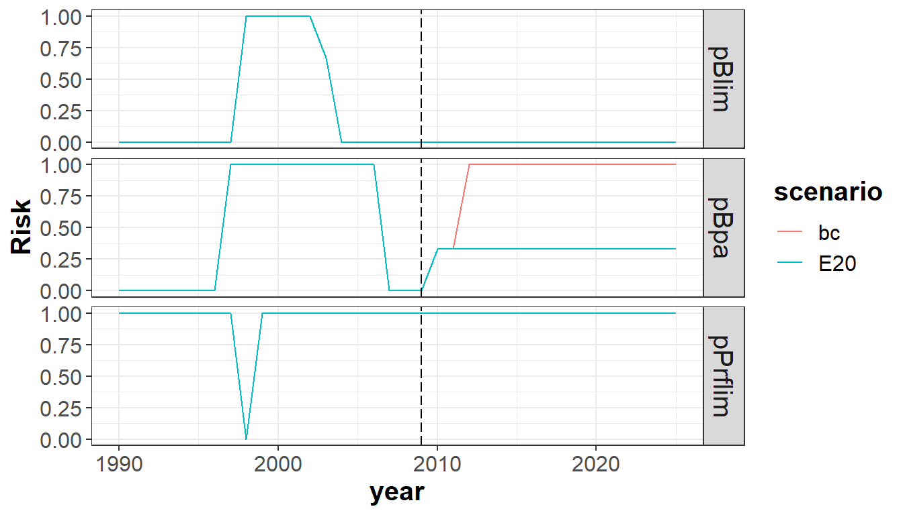
EXAMPLE 3: inclusion of technical measures
Description
This example shows how to simulate the introduction of technical measures. In this particular example, changes in the mesh size are simulated. This changes are supposed to cause changes in the capturabiltiy parameter and in the selectivity (due to possible changes in the percentage of catches assigned to the discard).
In this case, we use the same data as in the previous examples (i.e. oneIt). For details on it, see Example 1.
data(oneIt) # load the datasetExploring the data
Initial assumption on catchability, when conditioning the objects using the easy/smart conditioning functions (see FLBEIA tutorial), is that the effort in the projection period is the mean effort of a range of years (determined by the user).
Initial assumption on capturability is reestimated depending o the technical measures to be applied. Therefore, in the model conditioning we need to set the catchability parameter at age to the appropriate values.
# summary(oneItFl)
names(oneItFl) # only one fleet (fl1)[1] "fl1"names(oneItFl[['fl1']]@metiers) # with an unique metier (met1) [1] "met1"names(oneItFl[['fl1']]@metiers[['met1']]@catches) # targeting one stock (stk1)[1] "stk1"# oneItFl[['fl1']]@metiers[['met1']]@catches[['stk1']]@catch.qFor this dataset, the capturability is set as the mean of the period 2006-2008, we will consider this as the base case. An increase of the mesh size that hypothetically would lead to an increase in the age of recruitment to the fishery from current (1 year) up to 7 years will be simulated.
Having the following alternative scenario: * Scenario netBig : increase of age at recruiment from the fishery from age 1 to age 7.
Catchability is defined in oneItFl, so we generate a new object with these new values.
# Define the FLFleetsExt object for the alternative scenarios
# Check simulation and historic years
yrs <- dimnames(oneItFl[[1]]@effort)$year
sim.yrs <- as.character(oneItMainC$sim.years['initial']:oneItMainC$sim.years['final'])
hist.yrs <- yrs[!yrs %in% sim.yrs]
# Change the catchability for the simulation years:
oneItFl3a <- oneItFl
oneItFl3a[['fl1']]@metiers[['met1']]@catches[['stk1']]@catch.q[1:6,sim.yrs,] <- 0Run FLBEIA
Base Case: selectivity at age equal to the mean in the 2006-2008 period
s3 <- FLBEIA( biols = oneItBio, # FLBiols: FLBiol for stk1.
SRs = oneItSR, # List: FLSRSim for stk1.
BDs = NULL, # Not population with biomass dynamics.
fleets = oneItFl, # FLFleets: one fleet.
covars = oneItCv, # List: covars related to economy.
indices = NULL, # Not indices.
advice = oneItAdv, # List: 'TAC' and 'quota.share'
main.ctrl = oneItMainC, # List: info on start and end of the simulation.
biols.ctrl = oneItBioC, # List: model to simulate the stock dynamics.
fleets.ctrl = oneItFlC, # List: fleet dyn. models and other parameters.
covars.ctrl = oneItCvC, # List: covariates dynamics ("fixedCovar").
obs.ctrl = oneItObsC, # List: type of stock and index observation
# ("PerfectObs","NoObsIndex").
assess.ctrl = oneItAssC, # List: assessment model used ("NoAssessment").
advice.ctrl = oneItAdvC) # List: rule for TAC advice ("IcesHCR").Altenative case:
- Increase age at rec to the fishery (netBig): selectivity 0 for ages lower than 7
s3a <- FLBEIA( biols = oneItBio, # FLBiols: FLBiol for stk1.
SRs = oneItSR, # List: FLSRSim for stk1.
BDs = NULL, # Not population with biomass dynamics.
fleets = oneItFl3a, # FLFleets: one fleet.
covars = oneItCv, # List: covars related to economy.
indices = NULL, # Not indices.
advice = oneItAdv, # List: 'TAC' and 'quota.share'
main.ctrl = oneItMainC, # List: info on start and end of the simulation.
biols.ctrl = oneItBioC, # List: model to simulate the stock dynamics.
fleets.ctrl = oneItFlC, # List: fleet dyn. models and other parameters.
covars.ctrl = oneItCvC, # List: covariates dynamics ("fixedCovar").
obs.ctrl = oneItObsC, # List: type of stock and index observation
# ("PerfectObs","NoObsIndex").
assess.ctrl = oneItAssC, # List: assessment model used ("NoAssessment").
advice.ctrl = oneItAdvC) # List: rule for TAC advice ("IcesHCR").See that the only difference in the call is the fleets object, where we say to FLBEIA which effort to apply (among other things).
Results
Setting the reference points:
Blim.stk1 <- 800
Bpa.stk1 <- 1200Summary plots comparing the different scenarios:
# - stock summary
s30_bio <- rbind( bioSum(s3),
bioSum(s3a, scenario='netBig')) # biological indicators
plotbioSum( s30_bio, Blim=Blim.stk1, Bpa=Bpa.stk1, proj.yr=oneItMainC$sim.years[['initial']])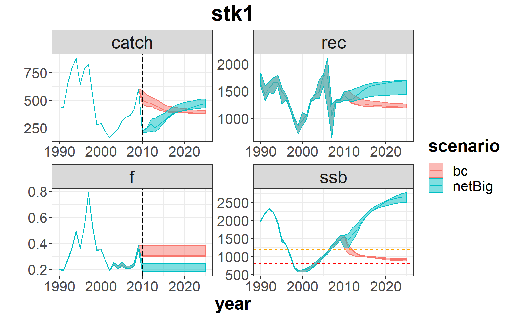
# - economic summary
s30_flt <- rbind( fltSum(s3),
fltSum(s3a, scenario='netBig')) # indicators at fleet level
plotfltSum( s30_flt, proj.yr=oneItMainC$sim.years[['initial']])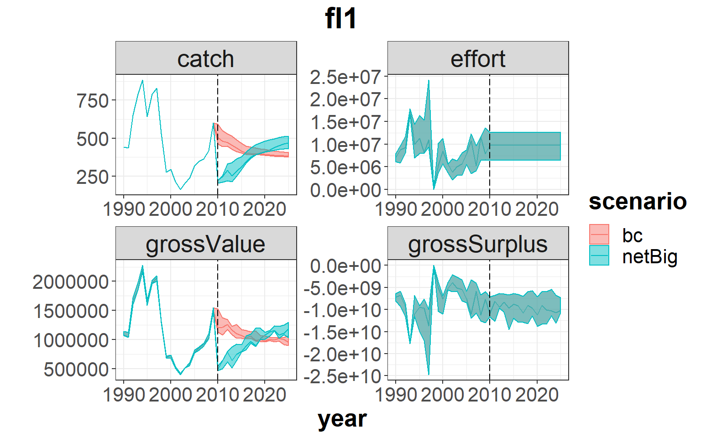
# - risk summary
s3_risk <- riskSum( s3, Bpa = c(stk1=Bpa.stk1), Blim = c(stk1=Blim.stk1), Prflim = c(fl1 = 0))
s3a_risk <- riskSum( s3a, Bpa = c(stk1=Bpa.stk1), Blim = c(stk1=Blim.stk1), Prflim = c(fl1 = 0),
scenario='netBig')
s30_risk <- rbind( s3_risk, s3a_risk) # risk indicators
s30_risk$year <- as.numeric(s30_risk$year)
p <- ggplot( data=s30_risk, aes(x=year, y=value, color=scenario)) +
geom_line() +
facet_wrap(~indicator, scales="free") +
facet_grid(indicator ~ .) +
geom_vline(xintercept = oneItMainC$sim.years[['initial']]-1, linetype = "longdash")+
theme_bw()+
theme(text=element_text(size=15),
title=element_text(size=15,face="bold"),
strip.text=element_text(size=15))+
ylab("Risk")
print(p)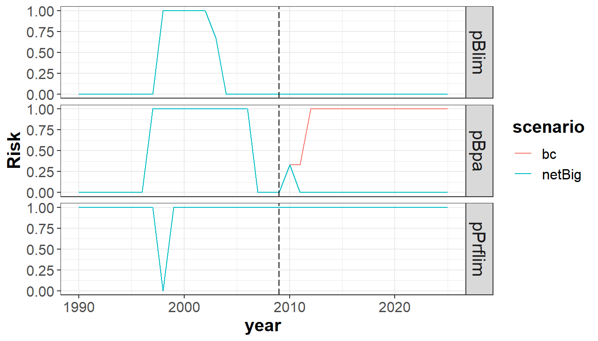
EXAMPLE 4: spatial and temporal closures
Description
This example shows how to simulate spatial and temporal closures.
In order to simulate spatial closures, as the model is not spatially explicit, there is the possibility to define different m?tiers by area and for setting this spatial closure is enough to set the effort share of this m?tier to 0, redistributing this remaining effort share among the rest of the m?tiers.
To simulate spatial closures, we have two alternatives. If the temporal resolution of the model fits the period closures, then it is enough to set the effort of all the fleets to 0 in those seasons in which we want to impose the temporal closure. However, if the temporal resolution of the model is annual, then the simulation of temporal closures should be done in the same way as for the spatial closures.
Finally, for the cases for which we do not have information on the m?tiers with enough resolution, then we can test changes in capturability. For example, when determining a closure for protecting juveniles, we can assume an associated reduction of the catchability of younger ages (for all the metiers or just for some or any of them, depending on the expected impact of the specific measure).
In this case, the Operating Model (OM) runs by quarter and it is formed by two stocks and two fleets which activity is performed in two metiers in both cases. In the Management Procedure (MP), the fleet dynamics is assumed to be of fixed effort and a Simple Mixed Fisheries behaviour, respectively for each of the fleets (for details, see information on fixedEffort and SMFB functions in the FLBEIA manual, the stocks are observed without error, there is not assessment carried out and different functions are are used to set the TAC yearly for each stock.
All the objects have 1 iteration and uncertainty in the projections comes exclusively from the generation of the new incoming recruitments or the annual growth.
- Operating model:
- Biological:
- Population dynamics:
stk1- age structured population growthstk2- biomass dinamics growth
- SR model:
stk 1- Beverthon and Holt - BD model:
stk 2- Pella Tomlinson
- Population dynamics:
- Fleet:
fl1- fixed effortfl2- Simple Mixed Fisheries Behaviour
- Covariates: no covariates +++REVISAR CUANDO ARREGLADO+++
- Biological:
- Management Procedure:
- Observation:
stk1,stk2- perfect observation - Assessment:
stk1,stk2- no assessment - Management advice:
stk1- ICES harvest control rulestk2- TAC set given an Fobj=0.3*Fsq, with F and TAC changing less than 10 and 15%, respectively
- Observation:
The neccesary FLR objects to run FLBEIA are available in the dataset called multi.
data(multi) # load the datasetExploring the data
For simulating spatial or temporal closures, the fleet effort and/or the effortshare by metier should be reassigned to the appropriate values.
Initial assumption on catchability, when conditioning the objects using the easy/smart conditioning functions (see FLBEIA tutorial), is that the effort in the projection period is the mean effort of a range of years (determined by the user).
Initial assumption on capturability is reestimated depending o the technical measures to be applied. Therefore, in the model conditioning we need to set the catchability parameter at age to the appropriate values.
# summary(multiFl)
names(multiFl) # two fleets (fl1, fl2)[1] "fl1" "fl2"names(multiFl[['fl1']]@metiers) # fl1: with two metiers (met1, met2) [1] "met1" "met2"names(multiFl[['fl1']]@metiers[['met1']]@catches) # fl1_met1: targeting 2 stocks (stk1, stk2)[1] "stk1" "stk2"names(multiFl[['fl1']]@metiers[['met2']]@catches) # fl1_met2: targeting 2 stocks (stk1, stk2)[1] "stk1" "stk2"names(multiFl$fl2@metiers) # fl2: with two metiers (met1, met2) [1] "met1" "met2"names(multiFl$fl2@metiers$met1@catches) # fl2_met1: targeting 2 stocks (stk1, stk2)[1] "stk1" "stk2"names(multiFl$fl2@metiers$met2@catches) # fl2_met1: targeting 2 stocks (stk1, stk2)[1] "stk1" "stk2"In order to consider the metiers, as area-based (e.g. metiers operating in Northern or Southern area), we rename them as metN and metS.
names(multiFl$fl1@metiers) <- names(multiFl$fl2@metiers) <- c('metN', 'metS')Having the following alternative scenario: * Base case - closeNO : no closures. * Scenario - closeNorth: close the northern area. * Scenario - closeSson2: ban completely the fishery in the 3rd quarter.
# Define the FLFleetsExt object for the alternative scenarios
# Check simulation and historic years
yrs <- dimnames(multiFl[[1]]@effort)$year
sim.yrs <- as.character(multiMainC$sim.years['initial']:multiMainC$sim.years['final'])
hist.yrs <- yrs[!yrs %in% sim.yrs]
# - Northern area closure:
# Change the effort share to 0 for metN and assign this share to the other metiers,
# in this case only metS
multiFl4a <- multiFl
multiFl4a[['fl1']]@metiers[['metS']]@effshare[,sim.yrs,] <-
multiFl4a[['fl1']]@metiers[['metS']]@effshare[,sim.yrs,] +
multiFl4a[['fl1']]@metiers[['metN']]@effshare[,sim.yrs,]
multiFl4a[['fl1']]@metiers[['metN']]@effshare[,sim.yrs,] <- 0
# - Ban completely the fishery in the 3rd quarter:
# Set the fleet effort to 0 in this season for both fleets
multiFl4b <- multiFl
multiFl4b[['fl1']]@effort[,sim.yrs,,3,] <- 0
multiFl4b[['fl2']]@effort[,sim.yrs,,3,] <- 0Run FLBEIA
Base Case: no closures
s4 <- FLBEIA( biols = multiBio, # FLBiols: FLBiol for stk1 and stk2.
SRs = multiSR, # List: FLSRSim for stk1.
BDs = multiBD, # List: FLBDSim for stk2.
fleets = multiFl, # FLFleets: two fleets (fl1, fl2), with 2 metiers each.
covars = multiCv, # List: covars related to economy.
indices = NULL, # Not indices.
advice = multiAdv, # List: 'TAC' and 'quota.share'
main.ctrl = multiMainC, # List: info on start and end of the simulation.
biols.ctrl = multiBioC, # List: model to simulate the stock dynamics.
fleets.ctrl = multiFlC, # List: fleet dyn. models and other parameters.
covars.ctrl = multiCvC, # List: covariates dynamics ("fixedCovar").
obs.ctrl = multiObsC, # List: type of stock and index observation
# ("PerfectObs","NoObsIndex").
assess.ctrl = multiAssC, # List: assessment model used ("NoAssessment").
advice.ctrl = multiAdvC) # List: rule for TAC advice ("IcesHCR").Altenative cases:
- Close the Northern area to the fishery –> not allow the metier fishing in this area (metN)
s4a <- FLBEIA( biols = multiBio, # FLBiols: FLBiol for stk1 and stk2.
SRs = multiSR, # List: FLSRSim for stk1.
BDs = multiBD, # List: FLBDSim for stk2.
fleets = multiFl4a, # FLFleets: two fleets (fl1, fl2), with 2 metiers each.
covars = multiCv, # List: covars related to economy.
indices = NULL, # Not indices.
advice = multiAdv, # List: 'TAC' and 'quota.share'
main.ctrl = multiMainC, # List: info on start and end of the simulation.
biols.ctrl = multiBioC, # List: model to simulate the stock dynamics.
fleets.ctrl = multiFlC, # List: fleet dyn. models and other parameters.
covars.ctrl = multiCvC, # List: covariates dynamics ("fixedCovar").
obs.ctrl = multiObsC, # List: type of stock and index observation
# ("PerfectObs","NoObsIndex").
assess.ctrl = multiAssC, # List: assessment model used ("NoAssessment").
advice.ctrl = multiAdvC) # List: rule for TAC advice ("IcesHCR").- Completely ban the fishery in the 3rd quarter.
s4b <- FLBEIA( biols = multiBio, # FLBiols: FLBiol for stk1 and stk2.
SRs = multiSR, # List: FLSRSim for stk1.
BDs = multiBD, # List: FLBDSim for stk2.
fleets = multiFl4b, # FLFleets: two fleets (fl1, fl2), with 2 metiers each.
covars = multiCv, # List: covars related to economy.
indices = NULL, # Not indices.
advice = multiAdv, # List: 'TAC' and 'quota.share'
main.ctrl = multiMainC, # List: info on start and end of the simulation.
biols.ctrl = multiBioC, # List: model to simulate the stock dynamics.
fleets.ctrl = multiFlC, # List: fleet dyn. models and other parameters.
covars.ctrl = multiCvC, # List: covariates dynamics ("fixedCovar").
obs.ctrl = multiObsC, # List: type of stock and index observation
# ("PerfectObs","NoObsIndex").
assess.ctrl = multiAssC, # List: assessment model used ("NoAssessment").
advice.ctrl = multiAdvC) # List: rule for TAC advice ("IcesHCR").See that the only difference in the call is the fleets object, where we alter the values for effort or effort share by metier.
Results
Setting the reference points:
Blim.stk1 <- 800
Bpa.stk1 <- 1200
Blim.stk2 <- 50000
Bpa.stk2 <- 65000Summary plots comparing the different scenarios:
# - stock summary
s40_bio <- rbind( bioSum(s4, scenario='closeNO'),
bioSum(s4a, scenario='closeNorth'),
bioSum(s4a, scenario='closeSson2')) # biological indicators
plotbioSum( s40_bio, stk.nam='stk1', Blim=Blim.stk1, Bpa=Bpa.stk1,
proj.yr=multiMainC$sim.years[['initial']])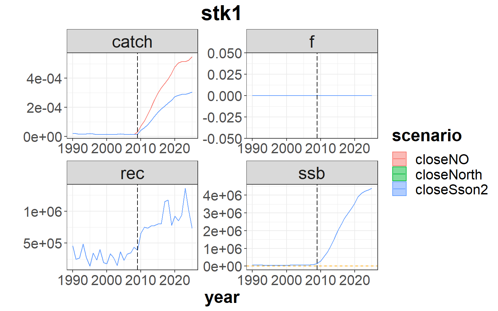
plotbioSum( s40_bio, stk.nam='stk2', Blim=Blim.stk2, Bpa=Bpa.stk2,
proj.yr=multiMainC$sim.years[['initial']])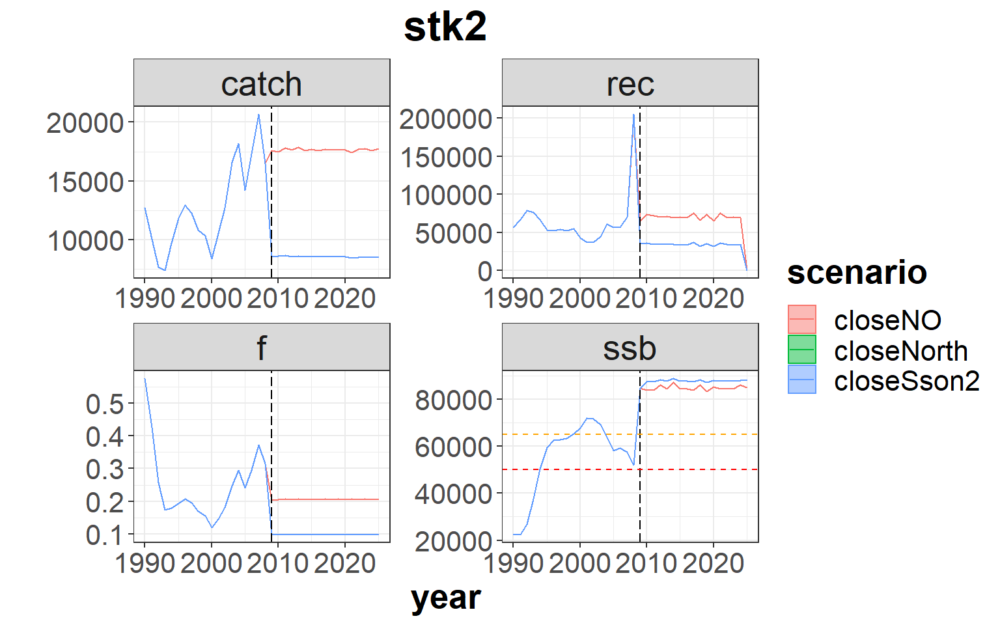
# - economic summary at metier level
s40_mt <- rbind( mtSum(s4, scenario='closeNO', long = TRUE),
mtSum(s4a, scenario='closeNorth', long = TRUE),
mtSum(s4b, scenario='closeSson2', long = TRUE)) # indicators at fleet level
s40_mt$year <- as.numeric(s40_mt$year)
s40_mt$flmt <- paste( s40_mt$fleet, s40_mt$metier, sep='_')
p <- ggplot( data=s40_mt, aes(x=year, y=value, color=scenario)) +
geom_line() +
facet_grid(indicator ~ flmt, scales="free") +
geom_vline(xintercept = multiMainC$sim.years[['initial']]-1, linetype = "longdash")+
theme_bw()+
theme(text=element_text(size=10),
title=element_text(size=10,face="bold"),
strip.text=element_text(size=10))
print(p)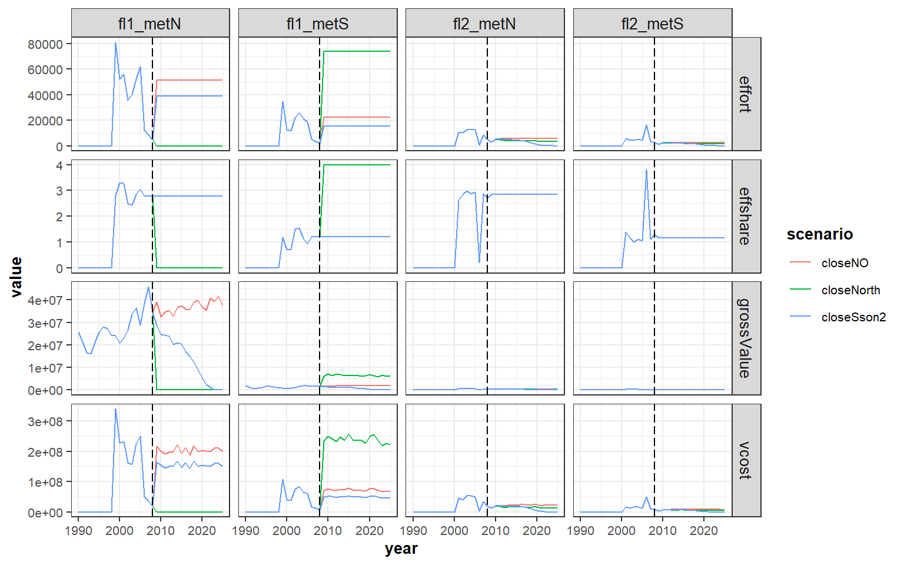
# - risk summary
s4_risk <- riskSum( s4, Bpa = c(stk1=Bpa.stk1,stk2=Bpa.stk2),
Blim = c(stk1=Blim.stk1,stk2=Blim.stk2),
Prflim = c(fl1=0,fl2=0), scenario = 'closeNO')
s4a_risk <- riskSum( s4a, Bpa = c(stk1=Bpa.stk1,stk2=Bpa.stk2),
Blim = c(stk1=Blim.stk1,stk2=Blim.stk2),
Prflim = c(fl1=0,fl2=0), scenario='closeNorth')
s4b_risk <- riskSum( s4b, Bpa = c(stk1=Bpa.stk1,stk2=Bpa.stk2),
Blim = c(stk1=Blim.stk1,stk2=Blim.stk2),
Prflim = c(fl1=0,fl2=0), scenario='closeSson2')
s40_risk <- rbind( s4_risk, s4a_risk, s4b_risk) # risk indicators
s40_risk$year <- as.numeric(s40_risk$year)
p <- ggplot( data=subset(s40_risk,indicator=='pPrflim'), aes(x=year, y=value, color=scenario)) +
geom_line() +
facet_grid(indicator ~ unit, scales="free") +
geom_vline(xintercept = multiMainC$sim.years[['initial']]-1, linetype = "longdash") +
theme_bw()+
theme(text=element_text(size=15),
title=element_text(size=15,face="bold"),
strip.text=element_text(size=15)) +
ylab("Risk")
print(p)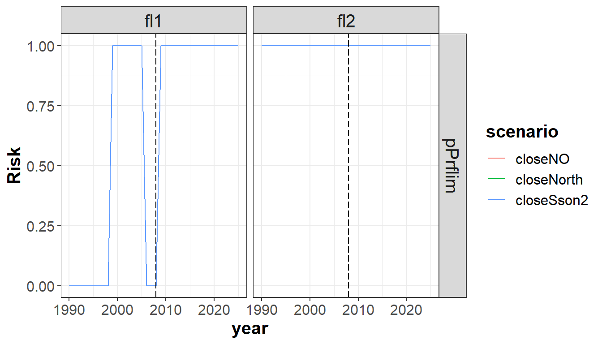
p <- ggplot( data=subset(s40_risk,indicator!='pPrflim'), aes(x=year, y=value, color=scenario)) +
geom_line() +
facet_grid(indicator ~ unit, scales="free") +
geom_vline(xintercept = multiMainC$sim.years[['initial']]-1, linetype = "longdash") +
theme_bw()+
theme(text=element_text(size=15),
title=element_text(size=15,face="bold"),
strip.text=element_text(size=15)) +
ylab("Risk")
print(p)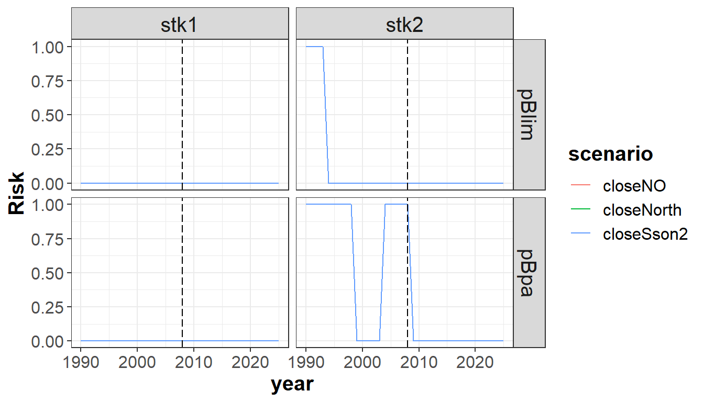
Exercises
Exercise 1: Following Example 1, now instead using a HCR to set the TAC, set a fixed TAC of 300 tons for all the projection period.
Exercise 2: Similar to what has been done in example Example 2, set a gradual reduction of the effort to achieve a 50% reduction of the effort in the last year of the projection period, relative to the last 3 years mean.
Exercise 3: Simulate a decrease in the mesh size that increases the capturability, but at the same time increases the discards. For example, leading to a 10% increase of catchability for the medium ages (4-10) and to discard 50% of the catches at ages 1-2 and 25% at age 3.
Results of the exercises
# EXERCISE 1
##############
# Set the TAC value to 300 tons
# Set the control parameters related to advice to 'fixedAdvice'
oneItAdvC3 <- list()
oneItAdvC3$stk1 <- list()
oneItAdvC3$stk1$HCR.model <- 'fixedAdvice' # selected HCR
# Set the TAC in the projection year to 300 tons
oneItAdv3 <- oneItAdv
proj.yrs <- dimnames(oneItAdv3$TAC)$year[as.numeric(dimnames(oneItAdv3$TAC)$year)>=
oneItMainC$sim.years[['initial']]]
oneItAdv3$TAC[,proj.yrs,] <- 300
## Run FLBEIA
# Fixed advice (fTAC): TAC fixed at 300 tons
s1b <- FLBEIA( biols = oneItBio, # FLBiols: FLBiol for stk1.
SRs = oneItSR, # List: FLSRSim for stk1.
BDs = NULL, # Not population with biomass dynamics.
fleets = oneItFl, # FLFleets: one fleet.
covars = oneItCv, # List: covars related to economy.
indices = oneItInd, # Not indices.
advice = oneItAdv3, # List: 'TAC' and 'quota.share'
main.ctrl = oneItMainC, # List: info on start and end of the simulation.
biols.ctrl = oneItBioC, # List: model to simulate the stock dynamics.
fleets.ctrl = oneItFlC, # List: fleet dyn. models and other parameters.
covars.ctrl = oneItCvC, # List: covariates dynamics ("fixedCovar").
obs.ctrl = oneItObsCInd, # List: type of stock and index observation
# ("NoObsStock","bioInd").
assess.ctrl = oneItAssC, # List: assessment model used ("NoAssessment").
advice.ctrl = oneItAdvC3) # List: rule for TAC advice ("AnnexIV").
## Results: comparison with previous scenarios
# - stock summary
s10_bio <- rbind( s10_bio,
bioSum(s1b, scenario='fTAC')) # biological indicators
plotbioSum( s10_bio, Blim=Blim.stk1, Bpa=Bpa.stk1, proj.yr=oneItMainC$sim.years[['initial']])
# - economic summary
s10_flt <- rbind( s10_flt,
fltSum(s1b, scenario='fTAC')) # indicators at fleet level
plotfltSum( s10_flt, proj.yr=oneItMainC$sim.years[['initial']])
# - risk summary
s1b_risk <- riskSum( s1b, Bpa = c(stk1=Bpa.stk1), Blim = c(stk1=Blim.stk1), Prflim = c(fl1 = 0),
scenario='fTAC')
s10_risk <- rbind( s10_risk, s1b_risk) # risk indicators
s10_risk$year <- as.numeric(s10_risk$year)
p <- ggplot( data=s10_risk, aes(x=year, y=value, color=scenario)) +
geom_line() +
facet_wrap(~indicator, scales="free") +
facet_grid(indicator ~ .) +
geom_vline(xintercept = oneItMainC$sim.years[['initial']]-1, linetype = "longdash")+
theme_bw()+
theme(text=element_text(size=15),
title=element_text(size=15,face="bold"),
strip.text=element_text(size=15))+
ylab("Risk")
print(p)
# EXERCISE 2
##############
# Fleet dynamics: effort model
oneItFlC$fl1$effort.model # fixed effort
# Set the effort values to fit the condition required
# (i.e. gradual reduction to 50% reduction of the effort in the last proj. year)
# - Generate a new FLFleets object
oneItFl2b <- oneItFl
# - Store values of simulation and historic years
yrs <- dimnames(oneItFl[[1]]@effort)$year
sim.yrs <- as.character(oneItMainC$sim.years['initial']:oneItMainC$sim.years['final'])
hist.yrs <- yrs[!yrs %in% sim.yrs]
# - Change the effort for the simulation years:
eff.yred <- 0.5/length(sim.yrs)
i <- 0
for (yr in sim.yrs) {
i <- i + 1
rf <- 1 - eff.yred * i
oneItFl2b[[1]]@effort[,yr,] <- rf * oneItFl2b[[1]]@effort[,hist.yrs[length(hist.yrs)],]
}
# - check if correct
oneItFl2b[[1]]@effort[,sim.yrs[length(sim.yrs)],]/oneItFl2b[[1]]@effort[,hist.yrs[length(hist.yrs)],]
## Run FLBEIA
# Gradual reduction of effort (E50g): gradual reduction for 50% reduction in last proj. yr
# (rel. to last 3yrs mean)
s2b <- FLBEIA( biols = oneItBio, # FLBiols: FLBiol for stk1.
SRs = oneItSR, # List: FLSRSim for stk1.
BDs = NULL, # Not population with biomass dynamics.
fleets = oneItFl2b, # FLFleets: one fleet.
covars = oneItCv, # List: covars related to economy.
indices = NULL, # Not indices.
advice = oneItAdv, # List: 'TAC' and 'quota.share'
main.ctrl = oneItMainC, # List: info on start and end of the simulation.
biols.ctrl = oneItBioC, # List: model to simulate the stock dynamics.
fleets.ctrl = oneItFlC, # List: fleet dyn. models and other parameters.
covars.ctrl = oneItCvC, # List: covariates dynamics ("fixedCovar").
obs.ctrl = oneItObsC, # List: type of stock and index observation
# ("PerfectObs","NoObsIndex").
assess.ctrl = oneItAssC, # List: assessment model used ("NoAssessment").
advice.ctrl = oneItAdvC) # List: rule for TAC advice ("IcesHCR").
## Results: comparison with previous scenarios
# - stock summary
s20_bio <- rbind( s20_bio,
bioSum(s2b, scenario='E50g')) # biological indicators
plotbioSum( s20_bio, Blim=Blim.stk1, Bpa=Bpa.stk1, proj.yr=oneItMainC$sim.years[['initial']])
# - economic summary
s20_flt <- rbind( s20_flt,
fltSum(s2b, scenario='E50g')) # indicators at fleet level
plotfltSum( s20_flt, proj.yr=oneItMainC$sim.years[['initial']])
# - risk summary
s2b_risk <- riskSum( s2b, Bpa = c(stk1=Bpa.stk1), Blim = c(stk1=Blim.stk1), Prflim = c(fl1 = 0),
scenario='E50g')
s20_risk <- rbind( s20_risk, s2b_risk) # risk indicators
s20_risk$year <- as.numeric(s20_risk$year)
p <- ggplot( data=s20_risk, aes(x=year, y=value, color=scenario)) +
geom_line() +
facet_wrap(~indicator, scales="free") +
facet_grid(indicator ~ .) +
geom_vline(xintercept = oneItMainC$sim.years[['initial']]-1, linetype = "longdash")+
theme_bw()+
theme(text=element_text(size=15),
title=element_text(size=15,face="bold"),
strip.text=element_text(size=15))+
ylab("Risk")
print(p)
# EXERCISE 3
##############
# Define the FLFleetsExt object for the alternative scenarios
# - Check simulation and historic years
yrs <- dimnames(oneItFl[[1]]@effort)$year
sim.yrs <- as.character(oneItMainC$sim.years['initial']:oneItMainC$sim.years['final'])
hist.yrs <- yrs[!yrs %in% sim.yrs]
# - Set the catchability at age:
# 10% increase of catchability at ages 4-10
oneItFl3b <- oneItFl
oneItFl3b[['fl1']]@metiers[['met1']]@catches[['stk1']]@catch.q[4:10,sim.yrs,] <-
1.1 * oneItFl[['fl1']]@metiers[['met1']]@catches[['stk1']]@catch.q[4:10,sim.yrs,]
# - Set the selectivity at age:
# 50% of the catch is discarded at ages 1-2
# 25% of the catch is discarded at age 3
oneItFl3b[['fl1']]@metiers[['met1']]@catches[['stk1']]@landings.sel # 00% catch : landing
oneItFl3b[['fl1']]@metiers[['met1']]@catches[['stk1']]@discards.sel # 0% catch : discard
oneItFl3b[['fl1']]@metiers[['met1']]@catches[['stk1']]@landings.sel[1:2,sim.yrs,] <- 0.5
oneItFl3b[['fl1']]@metiers[['met1']]@catches[['stk1']]@discards.sel[1:2,sim.yrs,] <- 0.5
oneItFl3b[['fl1']]@metiers[['met1']]@catches[['stk1']]@landings.sel[3,sim.yrs,] <- 0.75
oneItFl3b[['fl1']]@metiers[['met1']]@catches[['stk1']]@discards.sel[3,sim.yrs,] <- 0.25
# Comparison plot for selectivities:
adf <- as.data.frame
d3 <- adf(apply(oneItFl[['fl1']]@metiers[['met1']]@catches[['stk1']]@catch.q[,sim.yrs[1],,],
1:5,quantile,0.5))
d3a <- adf(apply(oneItFl3a[['fl1']]@metiers[['met1']]@catches[['stk1']]@catch.q[,sim.yrs[1],,],
1:5,quantile,0.5))
d3b <- adf(apply(oneItFl3b[['fl1']]@metiers[['met1']]@catches[['stk1']]@catch.q[,sim.yrs[1],,],
1:5,quantile,0.5))
d30_q <- rbind( data.frame(d3,case='bc'), data.frame(d3a,case='netBig'),
data.frame(d3b,case='netSmall'))
p <- ggplot( data=d30_q, aes(x=age, y=data, color=case)) +
geom_line() +
theme_bw() +
theme(text=element_text(size=15),
title=element_text(size=15,face="bold"),
strip.text=element_text(size=15)) +
scale_x_continuous(breaks=unique(d30_q$age)) +
ylab("catchability")
print(p)
## Run FLBEIA
# Net size decrease (netSmall): 10% increase selectivity (ages 4-10) relative to 2006-2008 mean
# + 50% ages 1-2 catch discarded and 25% of age 3
s3b <- FLBEIA( biols = oneItBio, # FLBiols: FLBiol for stk1.
SRs = oneItSR, # List: FLSRSim for stk1.
BDs = NULL, # Not population with biomass dynamics.
fleets = oneItFl3b, # FLFleets: one fleet.
covars = oneItCv, # List: covars related to economy.
indices = NULL, # Not indices.
advice = oneItAdv, # List: 'TAC' and 'quota.share'
main.ctrl = oneItMainC, # List: info on start and end of the simulation.
biols.ctrl = oneItBioC, # List: model to simulate the stock dynamics.
fleets.ctrl = oneItFlC, # List: fleet dyn. models and other parameters.
covars.ctrl = oneItCvC, # List: covariates dynamics ("fixedCovar").
obs.ctrl = oneItObsC, # List: type of stock and index observation
# ("PerfectObs","NoObsIndex").
assess.ctrl = oneItAssC, # List: assessment model used ("NoAssessment").
advice.ctrl = oneItAdvC) # List: rule for TAC advice ("IcesHCR").
## Results: comparison with previous scenarios
# - stock summary
s30_bio <- rbind( s30_bio,
bioSum(s3b, scenario='netSmall')) # biological indicators
plotbioSum( s30_bio, Blim=Blim.stk1, Bpa=Bpa.stk1, proj.yr=oneItMainC$sim.years[['initial']])
# - economic summary
s30_flt <- rbind( s30_flt,
fltSum(s3b, scenario='netSmall')) # indicators at fleet level
plotfltSum( s30_flt, proj.yr=oneItMainC$sim.years[['initial']])
# - risk summary
s3b_risk <- riskSum( s3b, Bpa = c(stk1=Bpa.stk1), Blim = c(stk1=Blim.stk1),
Prflim = c(fl1 = 0), scenario='netSmall')
s30_risk <- rbind( s30_risk, s3b_risk) # risk indicators
s30_risk$year <- as.numeric(s30_risk$year)
p <- ggplot( data=s30_risk, aes(x=year, y=value, color=scenario)) +
geom_line() +
facet_wrap(~indicator, scales="free") +
facet_grid(indicator ~ .) +
geom_vline(xintercept = oneItMainC$sim.years[['initial']]-1, linetype = "longdash")+
theme_bw()+
theme(text=element_text(size=15),
title=element_text(size=15,face="bold"),
strip.text=element_text(size=15))+
ylab("Risk")
print(p)
# - risk
s30_risk <- rbind( s30_risk, s3b_risk)
s30_risk$year <- as.numeric(s30_risk$year)
p <- ggplot( data=s30_risk, aes(x=year, y=value, color=scenario)) +
geom_line() +
# geom_ribbon(aes(x=year, ymin=q05, ymax=q95, fill=scenario), alpha=0.5) +
facet_wrap(~indicator, scales="free") +
facet_grid(indicator ~ .) +
geom_vline(xintercept = oneItMainC$sim.years[['initial']]-1, linetype = "longdash")+
theme_bw()+
theme(text=element_text(size=15),
title=element_text(size=15,face="bold"),
strip.text=element_text(size=15))+
ylab("Risk")
print(p)More information
- You can submit bug reports, questions or suggestions on this tutorial at https://github.com/flr/doc/issues.
- Or send a pull request to https://github.com/flr/doc/
- For more information on the FLR Project for Quantitative Fisheries Science in R, visit the FLR webpage, http://flr-project.org.
- You can submit bug reports, questions or suggestions specific to FLBEIA to flbeia@azti.es.
Software Versions
- R version 3.5.2 (2018-12-20)
- FLCore: 2.6.13
- FLBEIA: 1.15.4
- FLFleet: 2.6.1
- FLash: 2.5.11
- FLAssess: 2.6.3
- FLXSA: 2.6.3
- ggplotFL: 2.6.7
- ggplot2: 3.2.1
- Compiled: Wed Feb 26 13:15:28 2020
License
This document is licensed under the Creative Commons Attribution-ShareAlike 4.0 International license.
References
De Oliveira, José, Chris Darby, Timothy Earl, and Carl O’Brien. 2010. “Technical Background Evaluation of Annex Iv Rules.” ICES CM 2010/ACOM:58.
Garcia, Dorleta, Sonia Sánchez, Raúl Prellezo, Agurtzane Urtizberea, and Marga Andrés. 2017. “FLBEIA: A Simulation Model to Conduct Bio-Economic Evaluation of Fisheries Management Strategies.” SoftwareX 6: 141–47.
ICES. 2009. “Chair’s Report of the Workshop on the Form of Advice (Wkform).” ICES CM 2009/ACOM:53.